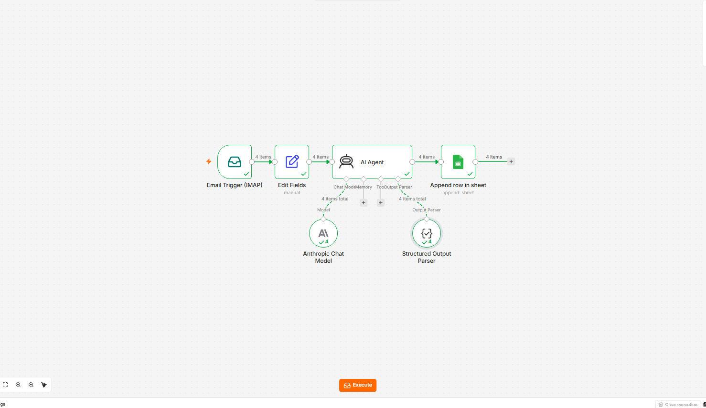
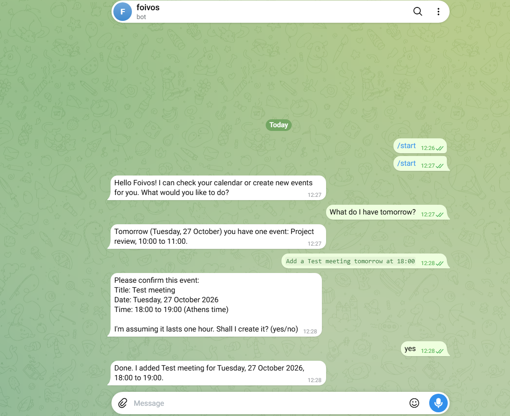
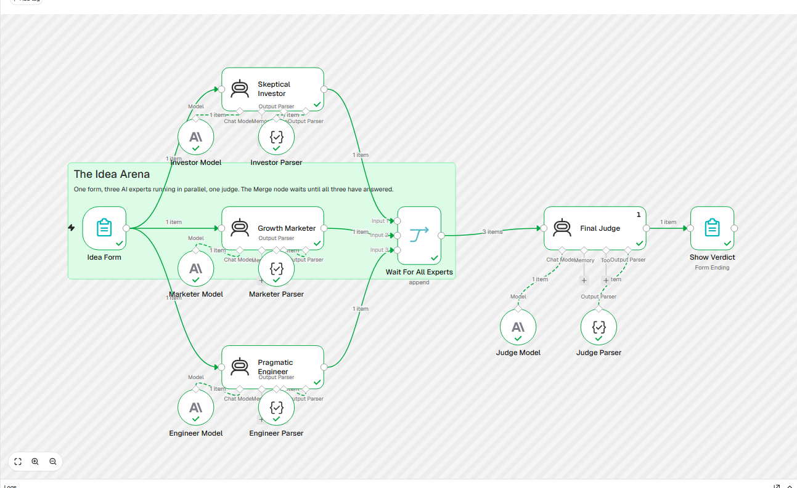

Email triage with AI
Reads incoming emails, lets Claude classify and summarize each one, and logs the result as a row in a Google Sheet. A messy inbox becomes a table you can filter.
n8n · Claude · Google Sheets
I build AI automations that save time on everyday work, like sorting emails or managing a calendar. Every project below comes with a plain explanation of how it works.
Three AI automations built with n8n and Claude. Each one has a README on GitHub that explains how it works.

Reads incoming emails, lets Claude classify and summarize each one, and logs the result as a row in a Google Sheet. A messy inbox becomes a table you can filter.
n8n · Claude · Google Sheets

A chatbot that understands natural language and can read and create Google Calendar events. It asks you to confirm before it changes anything.
n8n · Claude · Google Calendar

Submit a startup idea in a web form. An investor, a marketer and an engineer review it at the same time, then a judge weighs their opinions and returns a verdict with a concrete next step.
n8n · Claude · Web form
I'm Foivos. I'm learning to build AI automations, and I do it by making real projects instead of only following tutorials.
I care about being able to explain what I made and change it myself. I'm looking for remote and freelance work where clear communication matters as much as the code.
Send me a short message about what you need. I reply within a few days.
foivosfarkonas@gmail.com